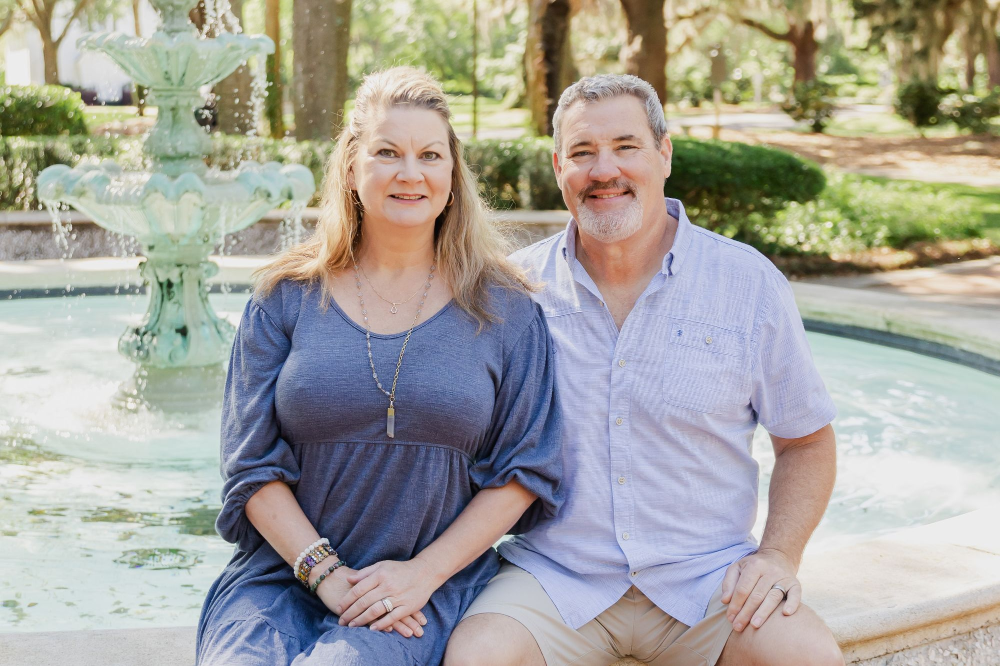

Trauma-informed
Separation can bring up painful history, including abuse. We explain what to expect before every meeting and hearing, let you set the pace, and help you plan for safety when it’s needed.
The Loomis Firm is a family law practice in Murrells Inlet, serving Horry County and the surrounding counties. We believe the end of a marriage can be handled with dignity, and that the best outcomes are the ones a family can live with.
We keep the family at the center of every case: the children, the parents, and the life that continues after the paperwork is signed.
Wherever it fits, we start with mediation and negotiation. Agreements that families shape themselves tend to hold up better, cost less, and leave room for parents to keep working together for their children.
We listen first. Before we recommend anything, we want to understand what matters most to you, what worries you, and what a good outcome would look like for your family.
When agreement isn’t possible, we prepare carefully and represent you with the same steadiness in court.
Separation can bring up painful history, including abuse. We explain what to expect before every meeting and hearing, let you set the pace, and help you plan for safety when it’s needed.
Stress, anxiety, depression and grief are normal parts of this process. We schedule with flexibility, communicate plainly, and never treat a parent’s mental health history as a reason for judgment.
Whether a disability affects you, your spouse or your child, we make accommodations in how we work together and account for long-term care, benefits and support in every agreement.
Military families face particular questions: dividing retired pay, Survivor Benefit Plan coverage, VA benefits, TRICARE, and parenting plans that work around deployments and moves. We know these issues and how they play out in South Carolina.

Attorney
Bonnie has practiced law in South Carolina since 1998. She leads the firm’s family law and mediation work, with a family-first approach and care for what each client is carrying.
Meet with Bonnie in our Murrells Inlet office. Bring your questions, and we’ll explain your options and what each one would mean for your family.
Monday to Friday, 9 am to 5 pm
By appointment